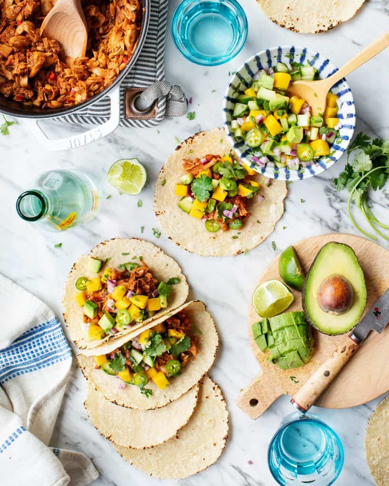

Vegan tacos

Description
These spciy vegan tacos are bright, fresh & fun to eat! You can easily prep the filling
ahead of time, so they're great for entertaining. Adapted from The Vegan Instant Pot Cookbook
Ingredients
Mango Avocado Salsa
- 2 cups peeled and diced mango, about 2 medium
- 1 medium avocado, diced
- 3/4 cup diced red onion
- 1/2 cup diced cucumber
- 3 tablespoons fresh orange juice
- 3 tablespoons fresh lime juice
- 1/2 cup cilantro, finely chopped
- Sea salt
Jamaican Jerk Seasoning
- 1 1/2 teaspoon onion powder
- 1 teaspoon sweet or hot paprika
- 1 teaspoon freshly ground black pepper
- 1 teaspoon dired thyme
- 1/2 teaspoon ground allspice
- 1/2 teaspoon ground cumin
- 1/4 teaspoon cayenne pepper
- 1/4 teaspoon ground cinnamon
- 1/4 teaspoon nutmeg
Jackfruit
- 2 cans jackfuit in brine or water
- 2 tablespoons extra-virgin olive oil
- 6 scallions, white and light green parts, sliced
- 4 garlic cloves, minced
- 1 1/2 inch prece fresh ginger, grated
- 1 habanero, serrano or jalapeno pepper, minced
- 2 tablespoons coconut sugar or agave nectar
- 2 tablespoons tomato paste
- 1/4 cup tamari
- 3 tablespoons fresh lime juice
- corn tortillas
Steps
- Make the mango-sals. In a medium bowl, combine the amngo, avocado, onion, cucumber, orange juice, lime juice, and
cilantro and mix gently. Season to taste with salt.
- Make the Jamaican Jerk Seasoning. Combine all of the spices together in a small bowl.
- Prepart the jackfruit: Drain the canned jackfuit and lightly rinse under water, shaking off excess water. Use your finger to remove
any thick cores and pull the pieces apart so that it resembles shredded pork.
- In a large pat, heat the oil over medium heat. Add the scallions and cook until browned, 1 to 2 minutes. Add the garlic, ginger, and
chile pepper and cook for 1 minute, stirring frequently to prevent buring. Add all of the Jamaican jerk seasoning, stir to coat, and
cook for 30 seconds, stirring constantly, until very fragrant.
- Add the shredded jackfruit, coconut sugar, tomato paste, tamari, and lime juice. Stir well. Pour in 1/2 cup water and mix again. Cover
and cook for 20 minutes, stirring occasionally.
- Serve the jackfruit with the tortillas and mango avocado salsa.